A horror condensed from grief, an endless descent, and one engine with two doors.
You are a horror condensed from a field of grief. Below the meadow lies the Bonefield, a dungeon of endless layers. You descend, consume the dead and the living to take their power, and climb back to walk among humans wearing a stolen face.
The more you kill and hoard, the higher your bounty, and the deadlier the hunters the kingdom sends after you. You learn by devouring; you fight with steel in one hand and incantations on your tongue; and the only way is down.
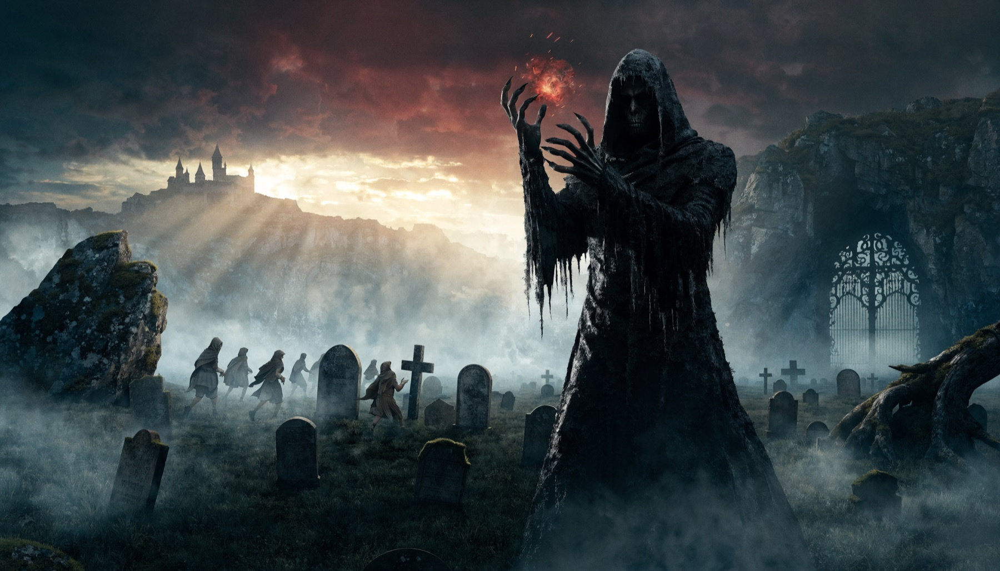
01The loop of the descent
I
Descend
Drop into the next Bonefield layer. Deeper means stronger foes and richer essence.
II
Consume and Learn
Everything that dies spills raw essence. Eat the dead and the living to take it, with their traits and new shapes. Power is taken, not bought.
III
Word and Blade
Swing, parry, dash, dismember. Or chant incantations to charge devastating spells.
IV
Bounty Rises
Kills and gold raise your Heat. The kingdom marches soldiers, knights, then a commander.
V
Harvest
Return to your essence Pool to reform, bank raw essence, and put the soulless to work — skeletons move only while the pool feeds them.
VI
Double Life
Ascend, blend in as a human, then dive again. One more layer. One more run.
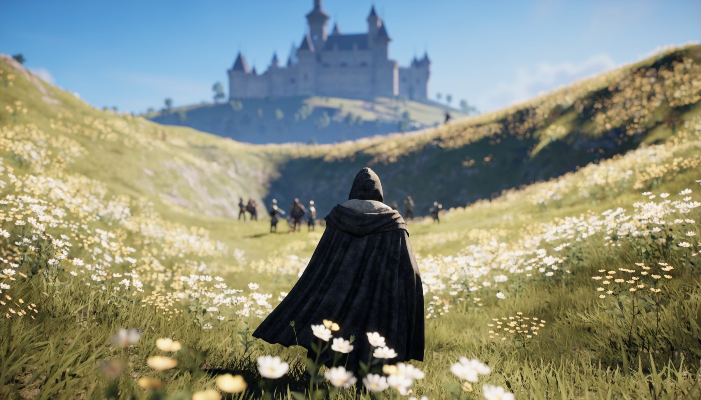
Codex Plate · The Meadow Above
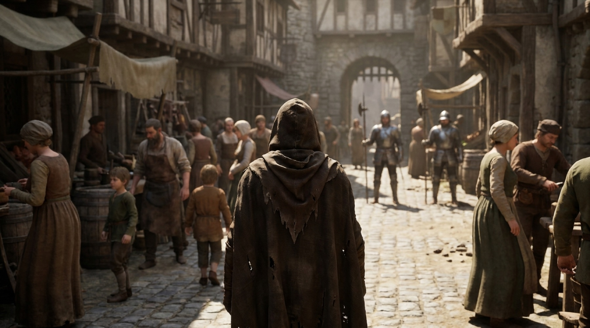
Codex Plate · The Stolen Face
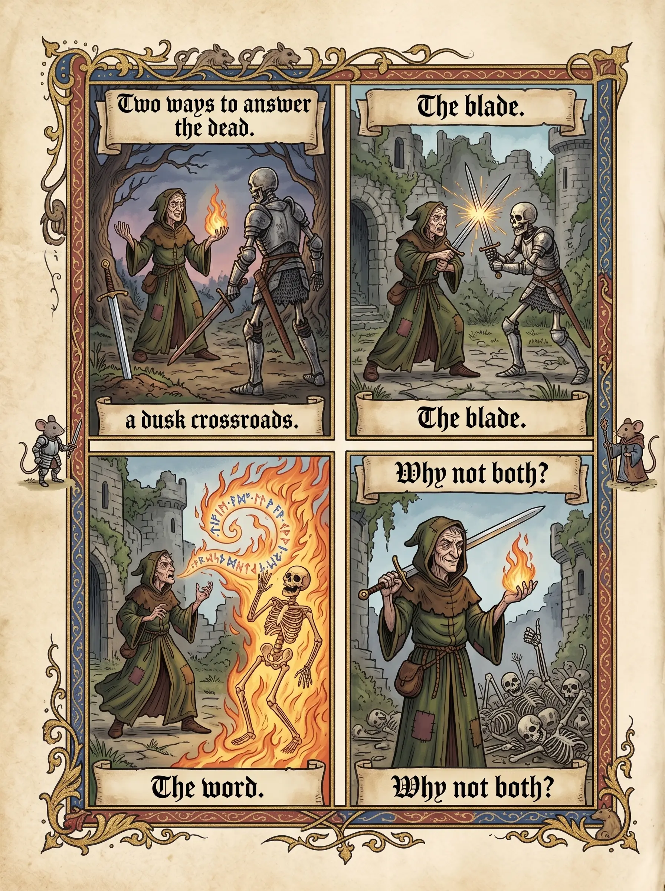
Codex Comic · Word or Blade
02One engine, two doors
One engine, two doors. A dark game for adults, and a bright one for children who are still learning to speak.
The Flagship
Essence, for adults
The full descent: the story, the blood, the bounty, and multiplayer. You speak to cast, and you speak to survive. Mature by design, and honest about it.
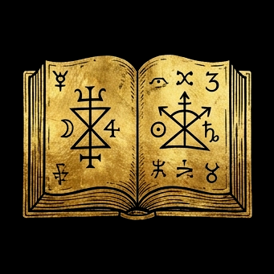
The Classroom
Wordlight, for kids
The same voice magic with zero gore: a young apprentice learns real words by speaking spells. Children practise how to talk: they pronounce, converse, negotiate, and the game listens. Fun first, learning as a side-effect.
One build of the engine sells twice.
03The eight pillars
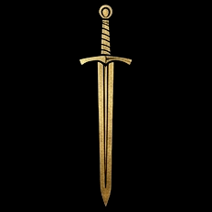
The Duelist
Word & Blade
Swing steel or chant long incantations for world-ending power. Your voice is a weapon, and your tongue can betray you.
The Glutton
Learn by consuming
You don't shop for upgrades, you eat them. Progression is predation.
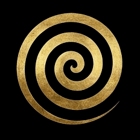
The Abyss
Endless descent
Every layer is deadlier; every kill paints a bigger target on you.
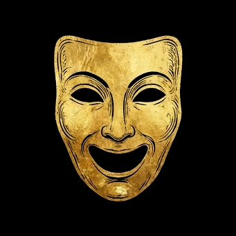
The Mask
The double life
Monster below, "human" above. Decide who ever learns what you truly are.
Devour a swordsman, gain his edge. Drink a mage's essence, take his fire.
The Glutton's creed
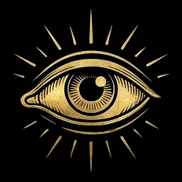
The Dread
Visceral horror
Limb-by-limb dismemberment, blood, and a fear system. You are the thing in the dark.
The Voice
Mastery you can hear
Nail a long incantation cleanly and it feels like landing a combo. You genuinely get better at it.
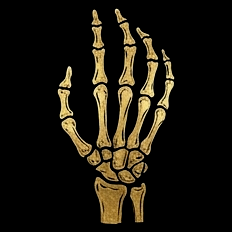
The Necromancer
Raise the dead
The corpses you devoured rise as thralls that fight, then rot. Lead a horde, or stand alone.
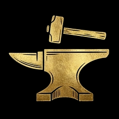
The Forge
Invent your magic
Name a spell, shape its words, and bind its effect at the Forge. The grimoire is yours to write.
04The build spectrum
There is no single right way to fight. Where you sit between blade and spell is your identity, and it is a live, second-to-second decision. You can slide along it mid-fight.
Build
Cast time
Power ceiling
Risk
Fantasy
Warrior
Instant melee + ~1s Level-1 spell
Low to mid
Low
A knight who flicks fire mid-combo
Spellblade
Short chants between blade work
Mid to high
Medium
Parry, then bury them in flame
Mega-Mage
Long incantations (up to ~2 min)
Catastrophic
High (defenceless while chanting)
Speak the world to ash, if you survive the cast
Where you sit between blade and spell is your identity, and it is a live, second-to-second decision.
Slide along it mid-fight: the spectrum is the class system.
05Two clocks at once
The loop above tells you what you do. This is how it feels to do it. Essence runs two clocks at once: one ticks in seconds, one across a whole run, and learning both is what turns a button-press into dread.
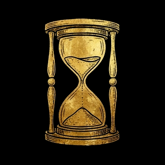
The Fast Clock
Speak under pressure
A blade never misses for nerves; a spell can. Casting asks you to hold a word steady while a knight winds up, so every incantation is a small bet that you finish before you are hit. The fast clock runs two to five seconds.
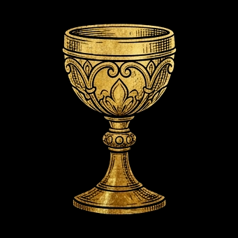
The One Fuel
Essence is stamina
There are not two bars. Essence is the life force itself: the warrior spends it small and calls it stamina, the mage pours it out and calls it magic. One well, and running it dry weakens the body that holds it.
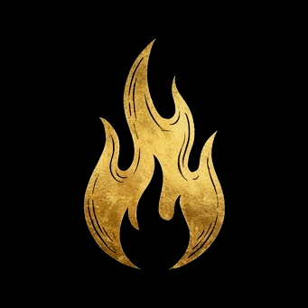
The Gamble
The cost of greed
Hold a word longer to charge a higher tier, and a higher tier is a longer window of exposure. Release early for a sure, smaller hit, or hold for the devastating one and pray nothing reaches you first. Safe at D, devastating at S.
The slow clock is the run itself: a quiet descent that swells into a hunt as your bounty climbs, a boss or an escape near the brink, then death, which is not loss but deposit. Banked essence, forged spells and known forms carry into the next descent, so every ending begins the next run stronger. The fast clock teaches you in seconds; the slow clock is what makes you whisper "one more layer."
06Play Essence Alpha
Essence Alpha is the one build to play, a war-camp where every system is proven: the campaign, the arsenal, the six words, and the dead that serve.
The Twenty Days
The Campaign
Twenty days across four depths. The dark keeps a schedule, and on days five, ten, fifteen and twenty it sends a name: The Captain · The Champion · The Last Stand · The Crown Itself. Survive the count or feed it.
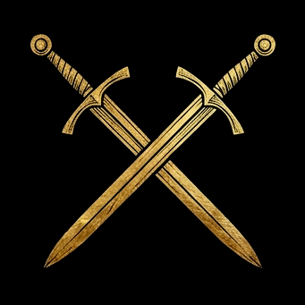
The Forged Seven
The Arsenal
Seven weapons you forge from scrap and essence, climbing E class to S. Three mastery families reward the way you actually fight, so the blade you carry becomes the blade you become.
The Six
The Six Words
Six spells, three tiers each: Force Push · Force Pull · Fireball · Lightning · Water Ball · Whipsnake. Tap for the small cast, hold to charge the ruinous one. Blade when they reach you, word when they run.
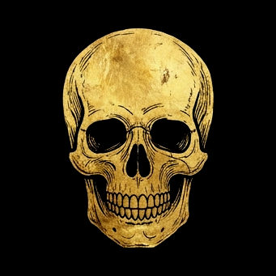
The Risen
The Dead That Serve
You ate the dead, so you may raise them. Press Q to summon skeletons from your banked essence, and stand over a downed ghoul to recruit it whole. A host that rots on a timer, then collapses back to a sip you reclaim.
The Lure
The Hoard That Betrays
Power is taken, and taking is noticed. From day four, every seventy gold you hoard lures another hunter to your trail, up to four more at a time. The gold that arms you is the gold that hunts you.
The Living
The Living Enemy
They are not targets, they are people. Foes parley before the blow: let them talk, then ambush them mid-speech. They surrender, they beg, they grieve their fallen, and some come back only to avenge them.
The blade you carry becomes the blade you become: climb it from scrap to S.
It plays on keyboard and mouse. There is no voice here; the voice belongs to the prototype. But the bones of the whole game already move. Day, fight, Soulforge, deeper: the same ring, twenty times down.
A slime with a mind and an appetite wakes in a mass grave, and the Kingdom above learns to fear what it buried.
The meadow looks like any other. Green grass, a low wind, a sky the colour of old milk. Beneath it lies the dead of every losing war, dumped in trenches and forgotten under flowers. Grief soaked the soil for a hundred years until it could no longer stay buried. It thickened. It cooled into a single will. You woke in that mass grave as a slime with a mind and an appetite, made of everything the living left behind. You are not their ghost. You are what their suffering became when there was finally enough of it.
I remember every mouth that screamed into this dirt, and none of them are mine. I keep them anyway. The dead taught me hunger before they taught me my name, so I ate first and learned after. I am still learning. There is so much down here to become.
The slime, first waking beneath the meadow
01Who you are
Origin
Born of grief
A century of slaughter pooled in one field and refused to rest. Sorrow condensed past the point of feeling into a thing that moves and wants. You are the residue of every death this ground swallowed, given a shape and a purpose it never asked for.
Nature
Essence-engineer
You do not pray to power or pay for it. You take it apart. Every corpse and every living thing carries essence, and you read it the way a smith reads metal, then forge it into forms, spells, imbued steel, and the raising of the dead. Consumption is your craft — and its rule is simple: you must eat to live. Essence alone will keep you moving, for you were born of it, but real food carries essence and more; flesh and bread return health the raw stuff cannot.
Truth
A horror
You wear sympathy like a stolen coat, yet underneath you are appetite with a memory. You eat the dead, then the dying, then whoever is left. The Kingdom is right to fear you. The kindest thing said of you above will be a lie you told first.
Above, a kingdom that prices you by the head. Below, the only way is down.
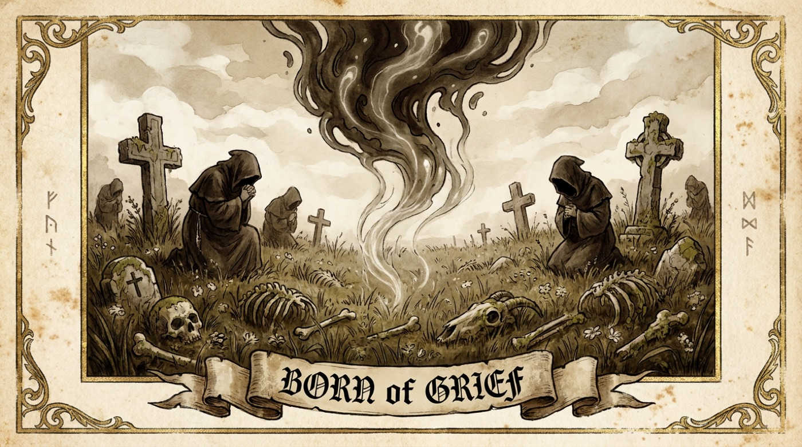
Codex Plate · Grief
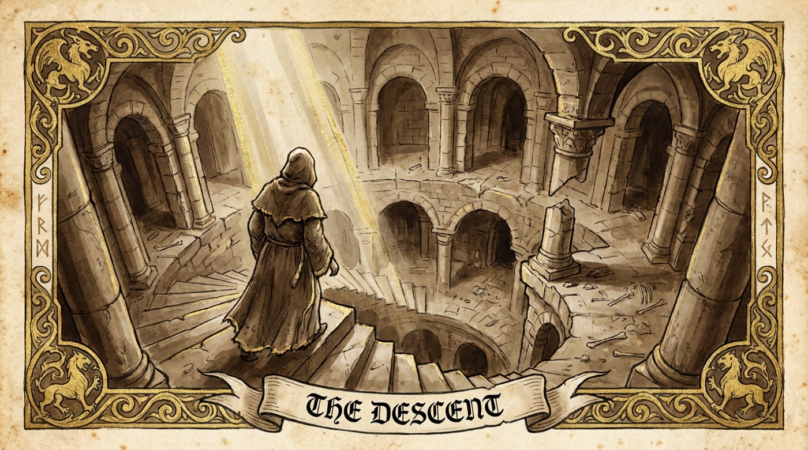
Codex Plate · The Descent
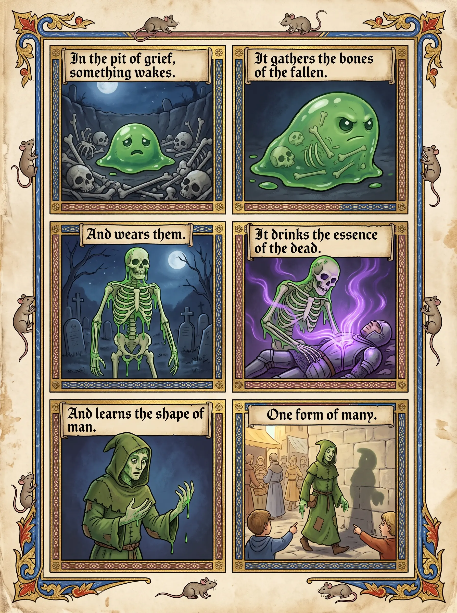
Codex Comic · How a Horror Learns to Be Human
02The cast
The Crown
The Lord-Commander
When your bounty peaks, the Crown stops sending boys with spears and sends him. He marches from the dungeon gate at the head of a column, banner first, and he has buried things like you before. He does not negotiate, and he does not break.
The Choir
The Inquisitor
The Choir gave him a name for you long before you had one of your own. Abomination, written in the registers, read aloud at the gate. He hunts your stolen faces with relic and rite, and the common folk love him because he promises them you can be unmade.
The Folk
The Villager
A frightened face at a half-shut door, the kind of body you might wear or the kind of life you might spare. Whether you take the face or leave it shapes what the Common Folk whisper of you, and whether the next door opens or bars from inside.
The Underworld
The Courtier of the Dead
In the deep courts, the Underworld keeps its own etiquette, and he keeps the ledger. He trades in essence the way nobles trade in land, and he will deal with you if your standing is high enough. He is not your friend. He simply finds you useful, for now.
The Mask
The Stolen Face
The body you wear above, taken from someone who no longer needs it. It walks, it talks, it answers to a name that was never yours. Hold it well and the town sees a neighbour. Let it slip and they see the seam, and behind the seam, you.
The Source
The First Grief
Not a person, the field itself, the oldest sorrow in the trench that woke before the rest. It is the shadow at your origin, the voice you sometimes mistake for memory. It wants what you want, deeper and colder, and it is always one layer below.
Reputation outlives your deaths: four ledgers, all kept in your name.
03The double life
The gate opens both ways. You climb out of the Bonefield wearing a face that breathed yesterday, and you walk into a town that buys your bread and your lies in the same breath. Up here you are not a horror. You are a quiet stranger with a name, an errand, and somewhere to be by dark.
The surface is where you gather what the deep cannot give. You listen for which patrol is short a man, which family will not be missed, which merchant sells without asking. Reputation rides with you into every street, so a town that fears your true shape will sell to your borrowed one until it learns the difference.
Then you go back down, because you always go back down. The mask is only a way to keep the field a secret a little longer.
The mask has a seam. Feed where you can be seen, let your shape slip, or arrive trailing a monstrous name, and the town begins to sense it. The Hunt names the price.
04The arc of descent
Depth I
Graveyard Meadow
The green field that is a grave. Soft dead, soft essence, the place you first learn to eat.
Depth II
Bone Orchard
Trees of stacked ribs and the older fallen. Drilled risen and the first knights of the dead.
Depth III
Red Deep
Where the trenches ran with the worst of the wars. Heat, ruin, and essence worth the burns.
Depth IV
Deeper Dark
Below memory, below the oldest grief. Elites, boss-echoes, and things that watched you wake.
Depth ∞
The Surface Endgame
Climb high enough in power and reputation and the war turns upward. The Kingdom becomes the descent.
05Fragments
Two scraps carried up from the Surface, copied into the Codex as they were found.
Fragment
Patrol order, Eastgate watch
Six men short since the spring fair. No bodies, no blood, no struggle reported. Note for the Captain: the missing all answered their own doors the morning after, then were never seen again. Hold the question for the Choir.
Fragment
A child's prayer, copied from a wall
Keep the green man out of my mother. He smiles wrong and he knows our names. If the flowers in the meadow turn to look at you, do not run. Walk. He likes it when you run.
✦
Chapter IV
The Hunt
Power is taken, and taking is noticed: the world answers in Fear, Bounty, and Reputation, and you answer back with a stolen face and a marching horde.
Power is taken, and taking is noticed. Every corpse you fold into yourself, every coin you hoard, every face you steal leaves a mark the world can read. So the world answers, never in one voice but in registers. The creatures beside you answer in Fear, the dread they feel as you draw near. The Crown answers in Bounty and Heat, the price it sets on your ruin within a single descent. Every faction answers in Reputation, the long memory that outlasts your deaths and decides who shelters you or draws steel. You answer back in kind. You raise the dead you have eaten into a marching Horde, and you wear a borrowed body on the surface, holding a disguise no longer than its Suspicion allows.
These are not separate meters but one connected web. Fear is the moment, Bounty the run, Reputation the saga, the Mask the seam that binds expectation to instinct, and the Rite of Raising the answer you give to all of them.
You are a horror. Your nearness breaks people down a ladder of dread, and broken enemies fight worse, flee, or beg for their lives. Calm holds ground, chatters, unaware of you. Anxious edges back, hands beginning to tremble. Afraid backs away steadily and calls for help. Terror breaks: screams, runs, or drops and begs.
And success is dangerous. Every kill and coin raises your bounty rank, and the kingdom answers with deadlier hunters. That is the tension that drives "one more layer." Push deeper for richer essence, or the elite come to collect.
Bounty rank
Who comes to collect
E
Villagers and the dead. No hunter has marched for you yet.
D
Word climbs toward the gate. The watch begins to mark your work.
C
Soldiers march from the dungeon gate.
B
Knights take up the hunt.
A
The hunt hardens: picked men, better steel, fewer mistakes.
S
A Commander marches to collect.
L
Legend. The kingdom marches.
Success is dangerous: the richer the run, the heavier the boots that answer.
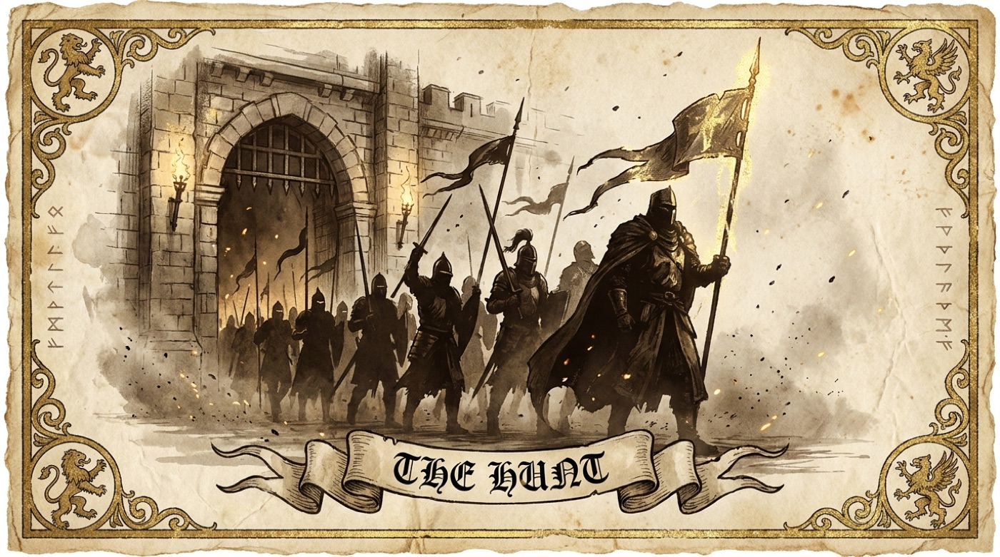
The kingdom marches: push deeper for richer essence, or the elite come to collect
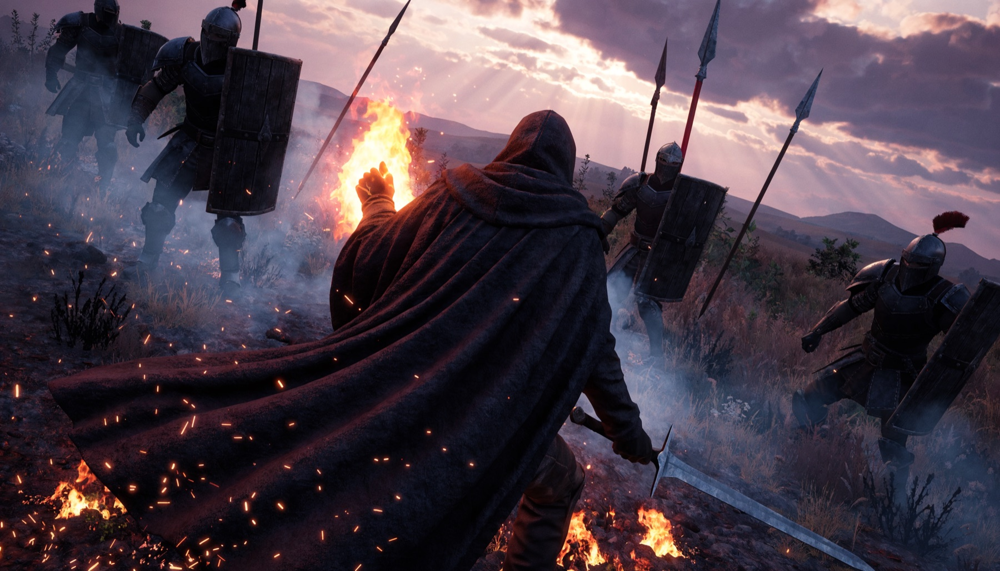
Rank C and climbing: soldiers march from the gate to collect
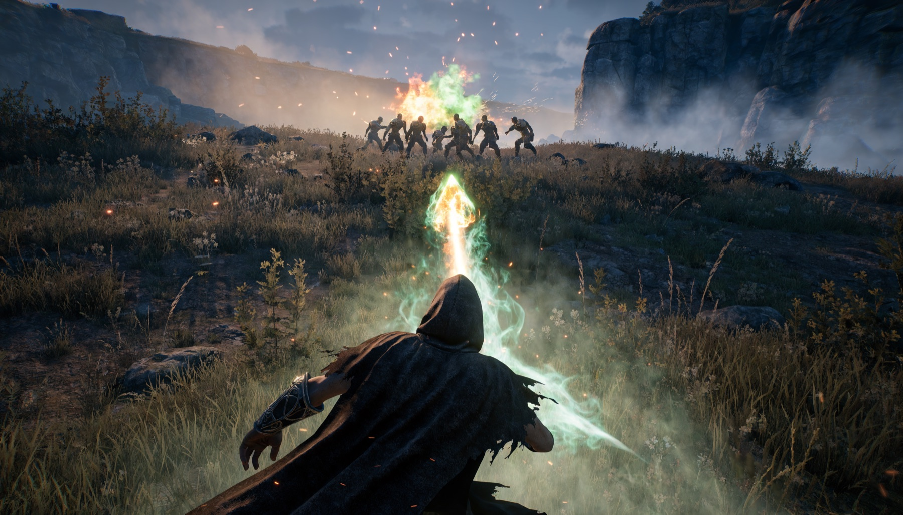
Break the hunt at range before it closes
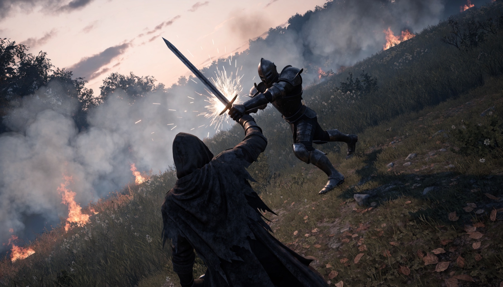
When it closes, parry: steel turned is a life kept
01Reputation: how the world remembers you
Fear is a moment. It rises in the foe across the room and dies when the room is clear. Bounty is a single run: the Crown counts your kills and your hoarded gold and marches an answer from the dungeon gate. Reputation outlives both. It is a standing, kept separately by four factions, that survives your death and your descent. Where Fear and Bounty govern the fight below, Reputation governs the surface above: who shelters your stolen body, who sells to it, who spits a rumour of your true face, and who draws steel before you speak.
Each of the four keeps its own standing, and the marker is yours to move. The Crown hardens with every soldier you devour and cools when you spare a patrol or return stolen tribute. The Choir damns you fastest for raising the dead and wearing a stolen face, and its sermons soften for a feigned pilgrim who burns no shrines and leaves the relics alone. The Folk bar their doors when word spreads that the slaughter wears a human shape, and shelter you without asking when you clear a haunt and leave them coin. The Underworld respects strength and the rite of raising: honour a pact and feed the dead their due, and it trades rare essence and passage; cross it and the deep itself sets ambushes in your path. The needle starts against you: the Choir furthest into reviled, the Crown close behind, the Folk wary at the middle, and only the Underworld leaning toward revered.
Reputation persists. Death is a deposit, and your name travels with the deposit. Banked essence, forged spells, and known forms carry into the next descent, and so does every faction's memory of what you did to earn them. A run can spike Bounty and reset it; Reputation only moves the way you steered it.
Faction
If they revile you
If they revere you
What it changes
The Crown
Your face is posted at every gate; patrols draw steel on sight and the next descent opens with the commander already marching.
You ride as a sanctioned beast: noble errands, paid bounties on rival monsters, and roads the watch leaves open.
Bounty pressure, gate access, paid contracts, who hunts you topside.
The Choir
Inquisitors and blessed steel that wound your kind harder; consecrated ground that burns your disguise off.
Sanctuary in the nave, holy reagents for sale, and witch-hunters called off your trail.
Anti-undead hunters, blessed-weapon enemies, access to wards and relics.
The Folk
Doors barred, prices doubled, no bed at any price; the town raises Suspicion against your stolen body the moment you enter.
Free shelter, cheap goods, and rumours that point the watch the wrong way.
Surface prices, safehouses, Suspicion baseline, where you can rest and feed.
The Underworld
Ambushes seeded in the deeper layers; the courts of the dead refuse your rites and the smugglers close their routes.
Rare essence and corpses for sale, secret passages between layers, and pacts that lend a thrall to your horde.
What rituals and forms you can buy, descent shortcuts, deep ambushes, allies below.
Fear is what they feel in the moment. Suspicion is how long the borrowed face holds.
02Raise the Bonefield: summoning the dead
You do not bury what you swallow. You keep it, and when the field grows thick with foes you say the name again and the corpse stands up. You ate the dead, so you may raise them: spend banked essence to reform what you devoured into temporary thralls that march at your word, fight in your name, and rot on a timer until they collapse back to the dust you called them from.
This is where you stop fighting alone. Every build sits on a triangle of blade, word, and horde: the blade is your own strike, the word is the rite that calls and binds, and the horde is the standing army that turns a duel into a siege, with the Commander in the middle pulling from all three. A standing horde swells your Fear aura and raises your Bounty most of all, because the Kingdom dreads a risen army above any single monster. And every thrall rots from the instant it stands: when it collapses you reclaim a sip of the essence you spent to raise it, so a horde spent well feeds the next rite of raising rather than draining you dry.
Thrall
Essence cost
Duration
Role
Shambler
Low
Brief
Cheap fodder, soaks blows and clogs the line.
Bone-Knight
Moderate
Steady
A drilled soldier who holds and trades blows.
Risen Beast
High
Long
A devoured monster that breaks formations.
Boss-Echo
Very high, rare
Long but fleeting
A faint copy of a slain elite, a finisher you save.
03The Pool and the Base
From the second layer down, you may dig in. The Essence Pool is your bank, and a base is where the bank lives: a claimed hollow where skeleton workers haul, build, and keep watch, each sustained by a steady drip of the essence you have banked. The first layer is no home; too many boots walk it, and every camp there is found. Below it, the ground turns yours.
The deeper you dig, the bigger and the louder the base you can afford: forges, bone-yards, a standing garrison, all far beneath the patrol lines of the Imperial Knights. Choose the address well. A hollow near the surface pays fast and is found fast; a deep hall is safe and slow. The Pool feeds it all either way, so a base is a bet, placed in essence, on where the Kingdom will not look.
The Bank
The Essence Pool
Everything you devour banks here, and everything you build is paid from here: shapes, spells, rites, and the wages of the dead.
The Servants
Skeleton workers
Raised for labour, not war: they dig, carry, and tend the base, and each one draws a steady upkeep from the Pool for as long as it stands.
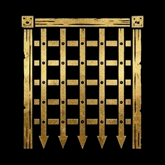
The Address
Deeper is louder
Every layer down buys a bigger base and a louder one, further from the Imperial Knights. Depth is privacy, and privacy is paid in risk.
The deeper the base, the louder you may live: depth is privacy, and privacy is paid in risk.
04Raise the hall
A base is not bought from a menu. It is raised. Draft the frame and your workers make it true: walls of bone and quarried dark, floors and stairs, a roof against the falling ash. Piece by piece, beam by beam, the way the old keeps were raised above, only yours grows downward, and nothing about its shape is decided for you.
Then fill it. Set a Soulforge for the forging of spells, racks for the Forged Seven, wards that watch the dark, and trophies of the things you devoured hung where your thralls can see them. The deeper the layer, the grander the hall you can keep before the Kingdom hears the hammering.
The Frame
Built, not bought
Walls, floors, stairs and halls, placed piece by piece where you want them. The shape of your keep is a decision, and every hall in the Bonefield is different.
The Works
Rooms with a purpose
A Soulforge to brew spells, racks for the seven weapons, wards against intruders, a vault for the hoard. Each working corner earns its upkeep from the Pool.
The Throne
Grandeur has a price
Trophies, banners, a seat above the bone-yard: the grander the hall, the louder its name travels. Glory feeds Fear, and Fear feeds the Hunt.
✦
The Codex
Read Deeper
The chapters above tell the story. The System Codex keeps the ledger: every number, rule, and spell, tagged by what is in game, what is locked design, and what is still planned.